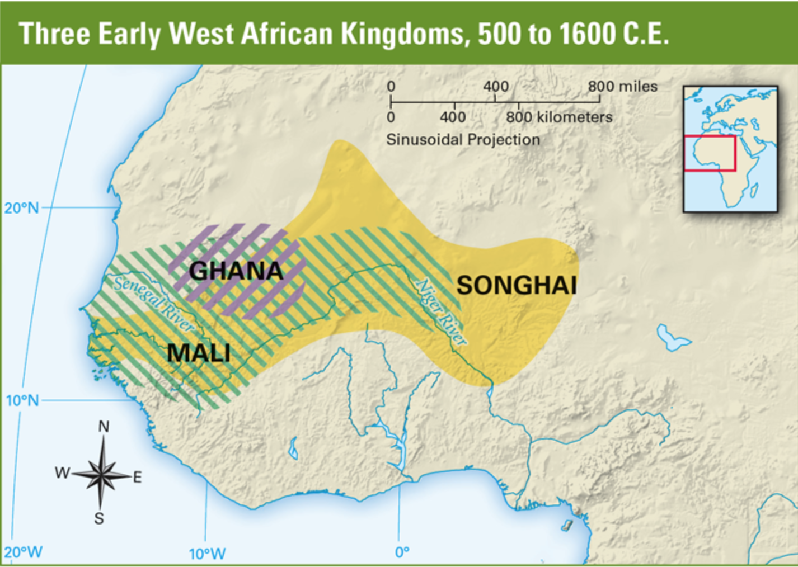

How trade impacted West Africa
There is a reason why kingdoms flourished in West Africa and one of the most notable factors is trade which has impacted West Africa is have different resources and they can exchange goods between each other like water. Which comes up to one of the best points. The niger river is in West Africa which gives them easy access to water and allows for plants and vegetation to grow there. The kingdoms could trade with eachother by using the Niger River for transportation.

This is map of Africa that shows the three kingdoms of West Africa highlighted Ghana, Mali, and Songhai.